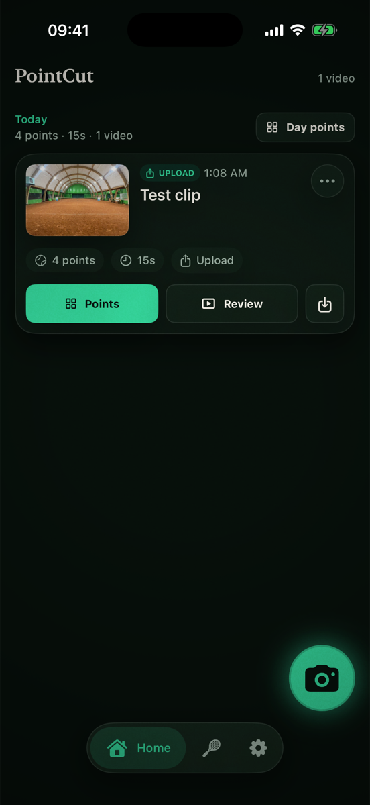
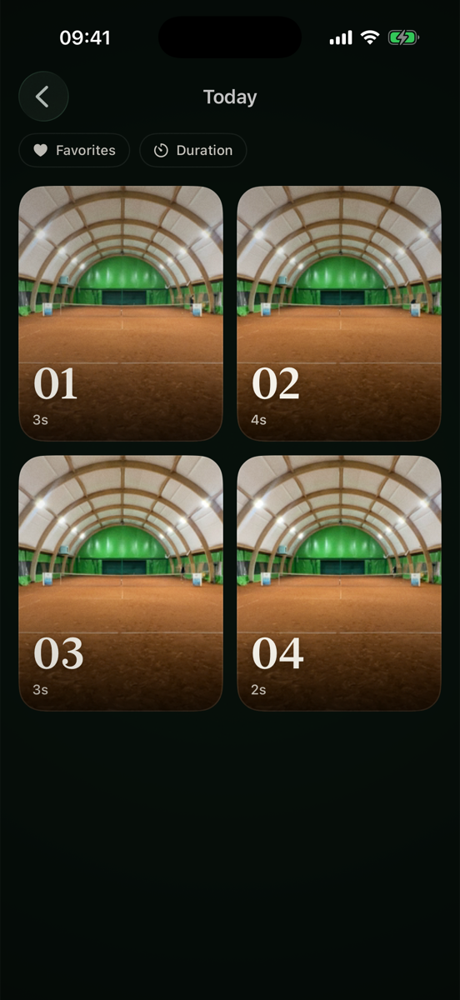
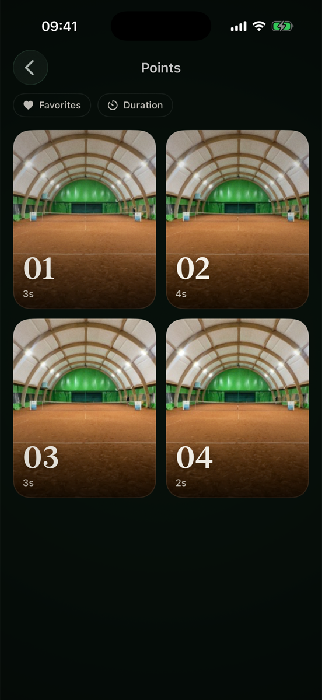
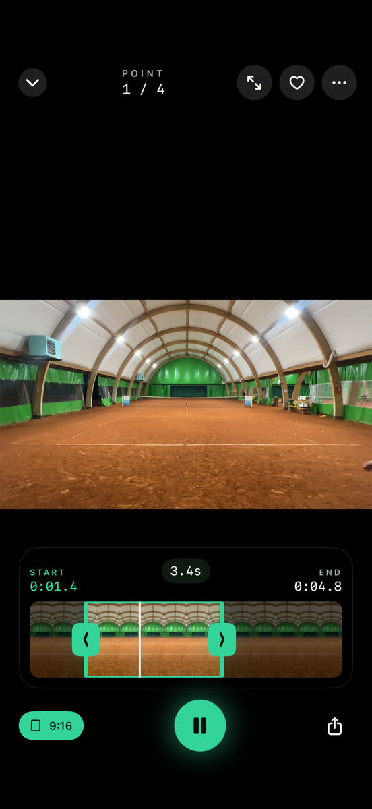
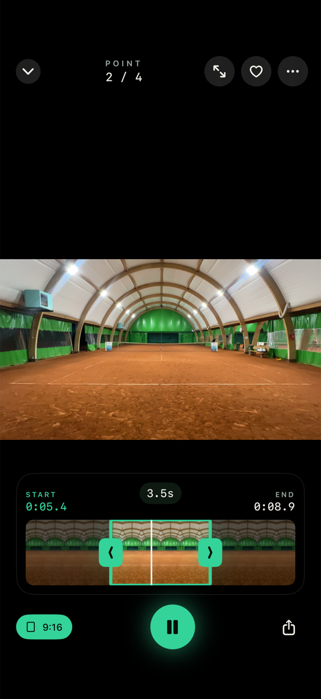
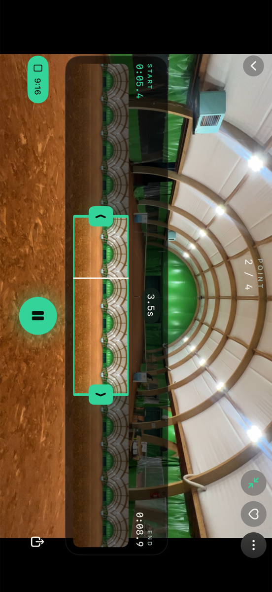
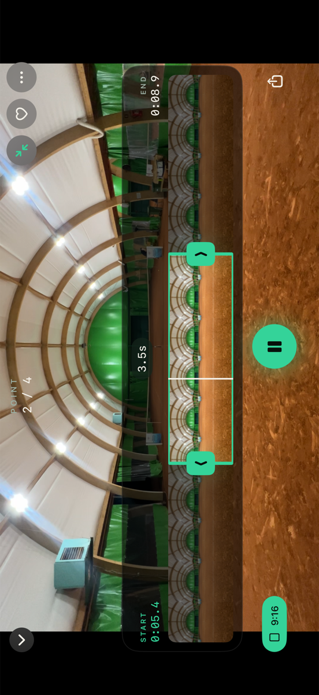
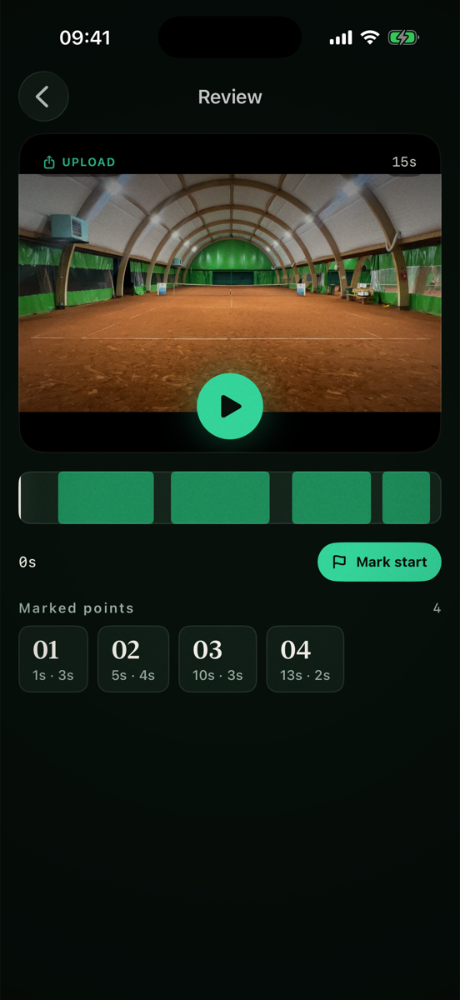
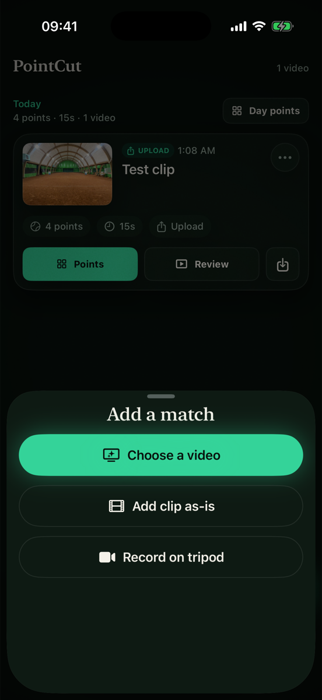
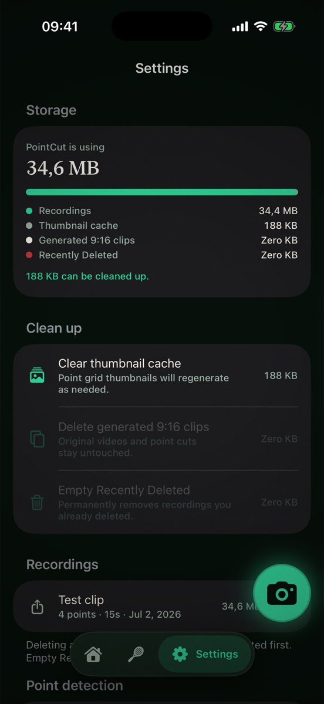

← all runs
20260702-010846
before = 20260702-010005
01-home changed
before — 20260702-010005

after — 20260702-010846
02-day-points changed

before — 20260702-010005
after — 20260702-010846
03-recording-points new

after — 20260702-010846
04-viewer-first new

after — 20260702-010846
05-viewer-second new

after — 20260702-010846
06-viewer-second-landscape-left new

after — 20260702-010846
07-viewer-second-landscape-right new

after — 20260702-010846
08-recording-review new

after — 20260702-010846
09-record-sheet new

after — 20260702-010846
10-settings new

after — 20260702-010846